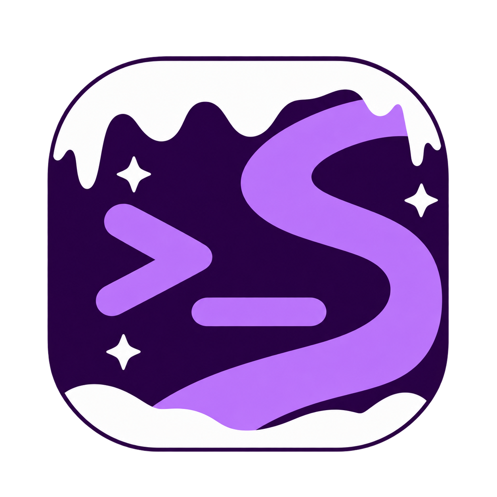

01 /
Browse and edit
Search flags, inspect their types, and make precise changes from one focused editor.

SyntaxFFlag managerSyntax is open-source software that gives your Roblox setup a clean control room. Browse, tune, save, and apply your flags without digging through folders or guessing at JSON.
Syntax keeps the useful parts of FFlag work close at hand, with a UI that stays out of the way.
Search flags, inspect their types, and make precise changes from one focused editor.
Keep your own combinations named clearly and ready to apply again.
Keep active flags deliberate as the client changes around them.
Dump offsets from your Roblox client when the default source is not enough.
Exchange practical configurations without turning every tweak into a tutorial.
Readable feedback makes experimentation feel reversible.
Syntax keeps its structure familiar while giving the whole room a different temperature.
 MidnightQuiet and easy on late sessions.
MidnightQuiet and easy on late sessions. OceanCool contrast with breathing room.
OceanCool contrast with breathing room. RoseWarm color for a softer command center.
RoseWarm color for a softer command center. ForestGrounded greens for calm work.
ForestGrounded greens for calm work. AmberWarm signal and clear hierarchy.
AmberWarm signal and clear hierarchy. PurpleVivid, focused, unmistakably Syntax.
PurpleVivid, focused, unmistakably Syntax.Keep scrolling and the app moves with you. When the tour finishes, the page returns to normal vertical reading.

Search, inspect, and edit available flags.

Keep your combinations ready to apply.

Start with practical profiles for FPS and quality.

Bring in shared packs and useful experiments.

Keep a readable trail while you work.

Choose offsets and tune the app around your machine.
Syntax is open source. Run it from Python, inspect the project, verify the build, or contribute improvements.
Syntax is a Windows FFlag manager for Roblox. It reads flags and types, lets you search and edit values, then groups changes into reusable profiles. Built-in presets cover performance, render distance, sharpening, resolution, and quality; saved and community presets make tested setups easy to revisit. Memory locking and debloating help keep applied flags stable and remove entries that no longer belong to current offsets. When the default source is not enough, the local dumper can collect offsets from the running Roblox client and save them under %LOCALAPPDATA%\Syntax\offsets\. The result is a small, transparent workspace for experimenting carefully and returning to a known setup.